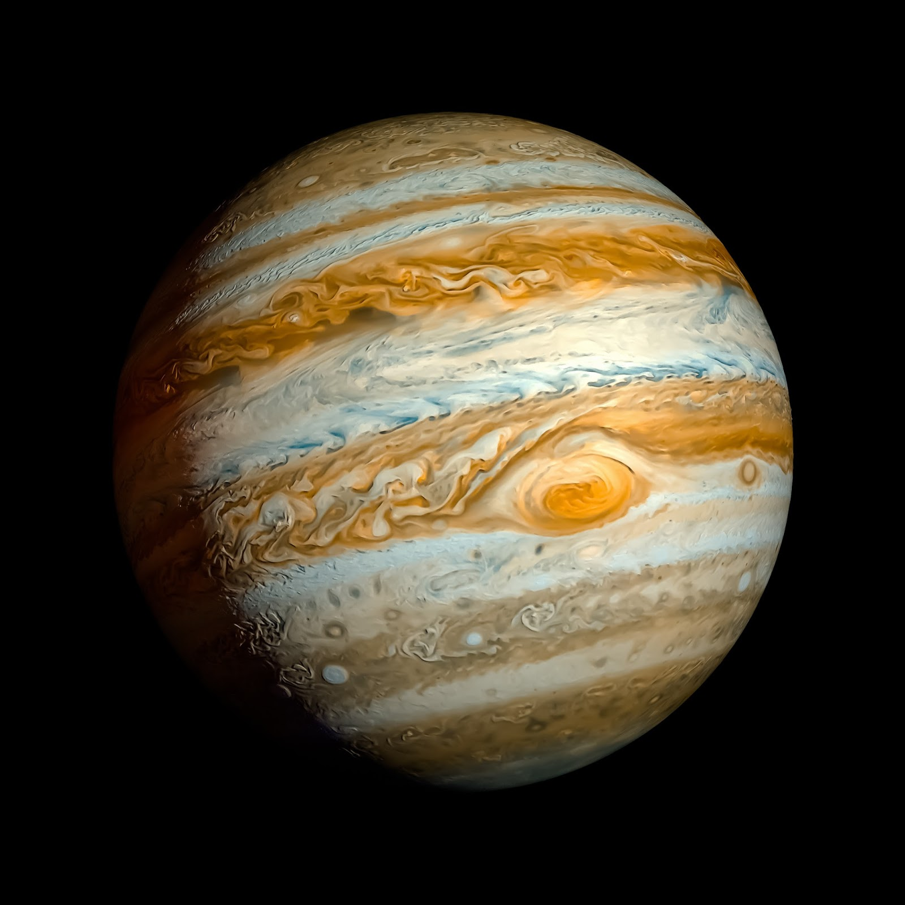
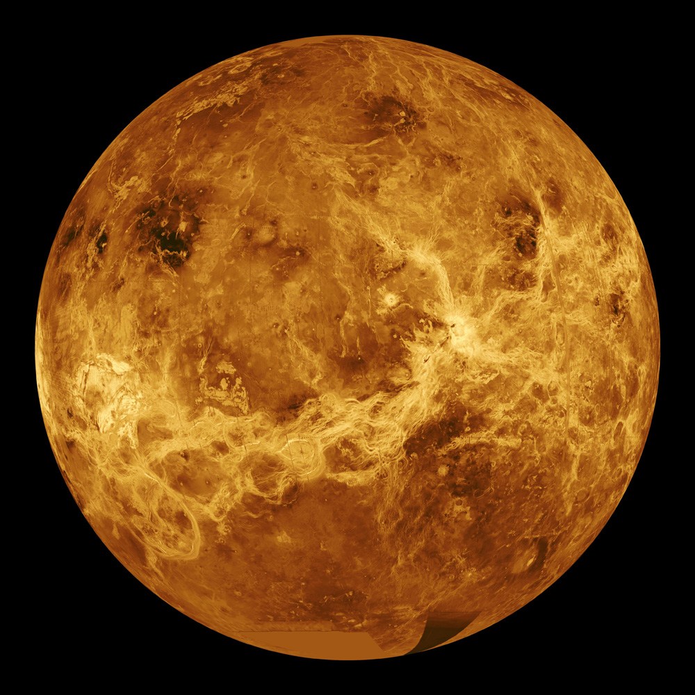
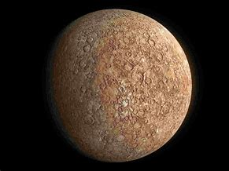
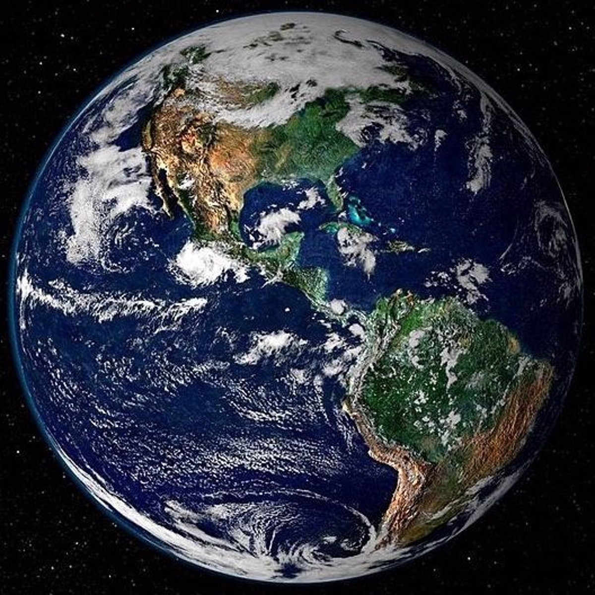
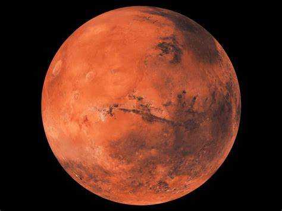
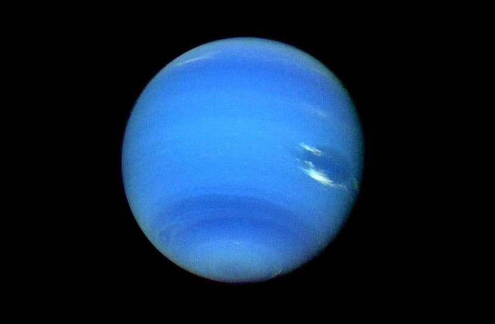

|  | Datos | |
|---|---|---|
| Distancia desde el Sol | 778,5 millones km | |
| Radio | 69.911 km | |
| Gravedad | 24,79 m/s² | |
| Masa | 1,898 × 10²⁷ kg | |
| Superficie | 61,42 miles de millones km² | |
| Duración del día | 0d 9h 56m | |
|  | Datos | |
|---|---|---|
| Distancia desde el Sol | 108,2 millones km | |
| Radio | 6.051,8 km | |
| Gravedad | 8,87 m/s² | |
| Masa | 4,867 × 10²⁴ kg | |
| Superficie | 460,2 millones km² | |
| Duración del día | 243 días terrestres | |
|  | Datos | |
|---|---|---|
| Distancia desde el Sol | 57,91 millones km | |
| Radio | 2.439,7 km | |
| Gravedad | 3,7 m/s² | |
| Masa | 3,285 × 10²³ kg | |
| Superficie | 74,8 millones km² | |
| Duración del día | 58 días y 15 horas terrestres | |
|  | Datos | |
|---|---|---|
| Distancia desde el Sol | 149,6 millones km | |
| Radio | 6.371 km | |
| Gravedad | 9,8 m/s² | |
| Masa | 5,972 × 10²⁴ kg | |
| Superficie | 6510,1 millones km² | |
| Duración del día | 24 horas | |
|  | Datos | |
|---|---|---|
| Distancia desde el Sol | 227,9 millones km | |
| Radio | 3.389,5 km | |
| Gravedad | 3,71 m/s² | |
| Masa | 6,39 × 10²³ kg | |
| Superficie | 144,8 millones km² | |
| Duración del día | 1d 0h 37m | |
|
Datos | |
|---|---|---|
| Distancia desde el Sol | 1.433 millones km | |
| Radio | 58.232 km | |
| Gravedad | 10,44 m/s² | |
| Masa | 5,683 × 10²⁶ kg | |
| Superficie | 42,7 miles de millones km² | |
| Duración del día | 0d 10h 42m | |
 |
Datos | |
|---|---|---|
| Distancia desde el Sol | 2.871 millones km | |
| Radio | 25.362 km | |
| Gravedad | 8,87 m/s² | |
| Masa | 8,681 × 10²⁵ kg | |
| Superficie | 8,083 miles de millones km² | |
| Duración del día | 0d 17h 14m | |
|  | Datos | |
|---|---|---|
| Distancia desde el Sol | 4.495 millones km | |
| Radio | 24.622 km | |
| Gravedad | 11,15 m/s² | |
| Masa | 1,024 × 10²⁶ kg | |
| Superficie | 7,618 miles de millones km² | |
| Duración del día | 0d 16h 6m | |